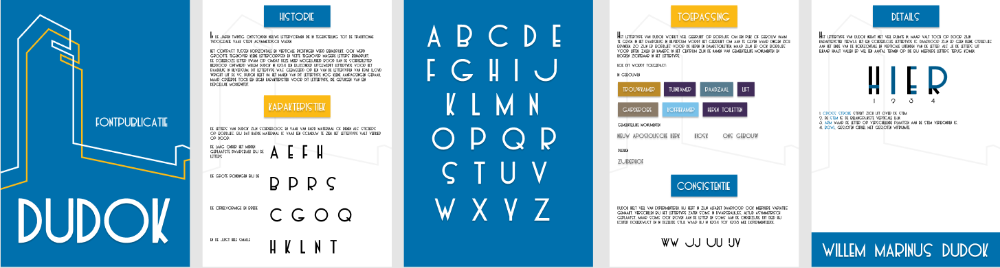
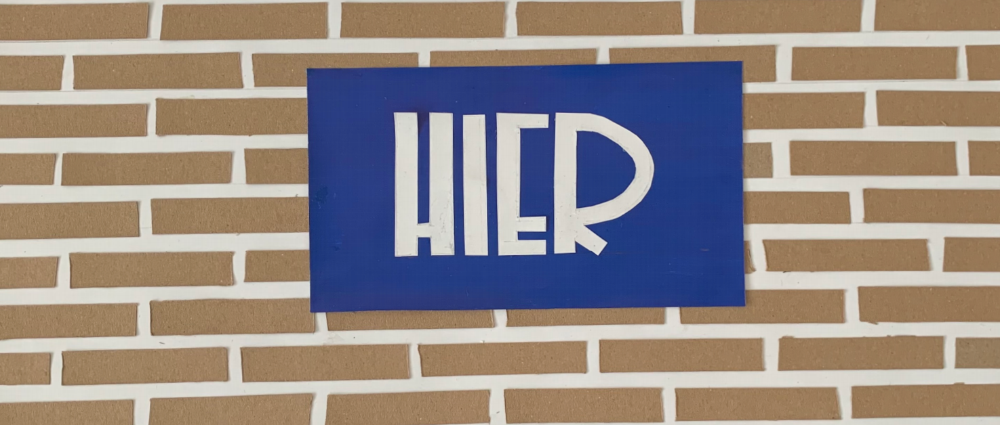

Typografie
Opdrachtomschrijving
Ik heb voor het vak typografie de opdracht gekregen om een 4 letterig woord te vinden en deze te verbeelden in een four-letter word en een font-publicatie die aansluit bij het karakter van mijn woonplaats en in dit geval Hilversum. Ik ben begonnen met het onderzoeken van de oorsprong van het lettertype Dudok, waarna ik de focus ben gaan leggen op het maken van een visuele identiteit voor mijn woonplaats. Dit lettertype staat het meest karakter voor mijn woonplaats.
Onderzoek
Willem Dudok was een architect in hart en nieren. Dudok ontwierp de meeste wijken, scholen en gemeentelijke gebouwen voor Hilversum en bepaalde daarmee het gezicht van deze stad. Hij richtte zich in zijn stijl niet tot 1 bepaalde richting, maar stond ook open voor andere stromingen. Hij volgde vaak de rationalistische stijl van Berlage, maar voelde zich daardoor soms beperkt en ging meer experimenteren met andere stromingen zoals het expressionisme.
In de jaren 20 ontstonden nieuwe lettervormen die in tegenstelling tot traditionele typografie asymmetrisch waren.
Het contrast tussen horizontale en verticale richtingen werd benadrukt en grote tegenover kleine lettercorpsen en vette tegenover magere letters. De scheefloze letter kwam op omdat deze meer mogelijkheid bood dan de schreefletter. Hierdoor ontwierp Dudok in 1924 een bijzonder uitgewerkt lettertype voor het raadhuis in Hilversum. Dit lettertype was gebaseerd op een van de lettertypen van Frak Lloyd Wright uit de VS. Dudok heeft na het maken van dit lettertype nog kleine aanpassingen gedaan, maar creëerde toch een eigen karakteristiek voor het lettertype.
Zijn lettertype valt op door de laag onder het midden geplaatste dwarsbalk bij de letters A, E, F, H. De grote rondingen bij de B, P, R en S, de cirkelvormige en brede C,G,O en Q en de juist hele smalle H, K, L, N en T. zijn letters zijn vaak van hard materiaal of dienen als stickers op bordjes. Bij dat harde materiaal zie ik vaak een schaduw terug.
Toch was ook er sprake van niet altijd consequent werk van Dudok. Verschillen bij het lettertype zaten soms in dwarsbalkjes, altijd asymmetrisch geplaatst, maar soms ook boven aan de letter en soms aan de onderzijde. Dit deed hij echter doelbewust en in dezelfde stijl waar hij in 1924 tot 1928 mee experimenteerde.
Bronnen:
https://dudok.org/1931/07/11/dudok-en-het-mysterie-van-de-omgekeerde-b/
https://nl.wikipedia.org/wiki/Willem_Dudok

